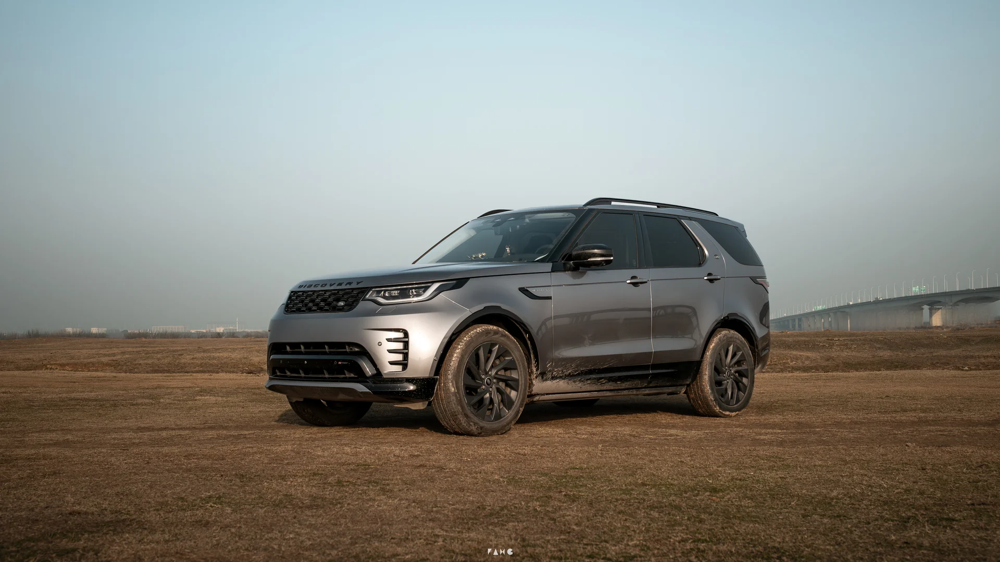
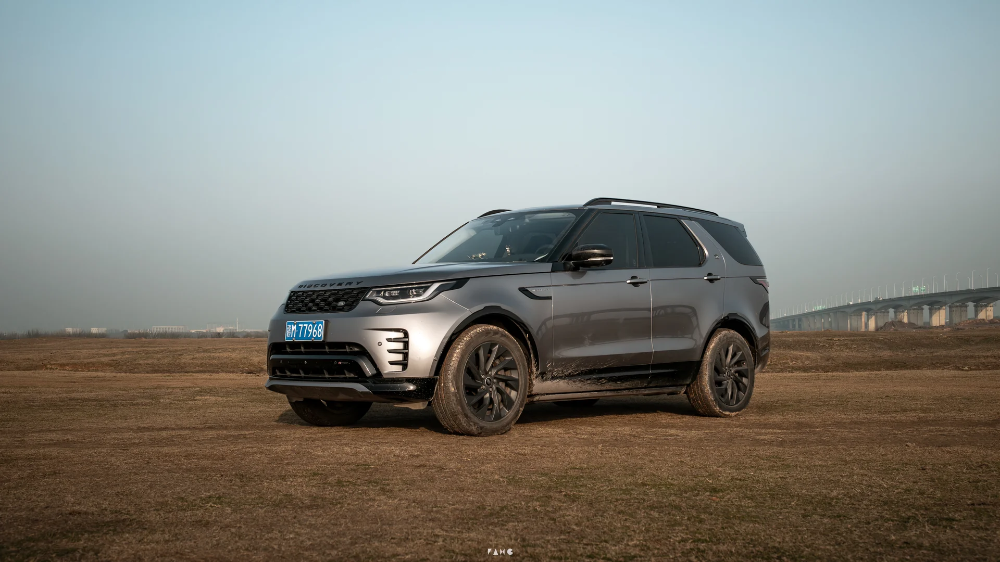
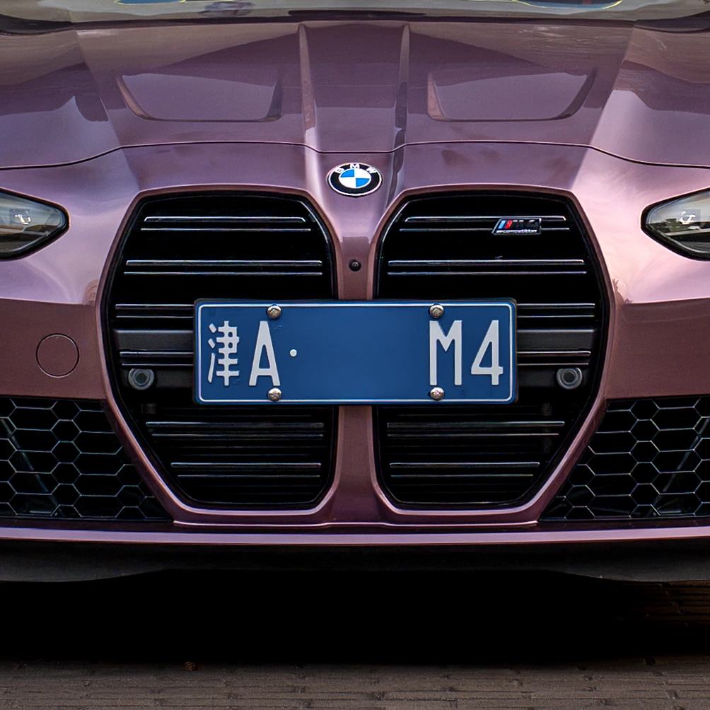
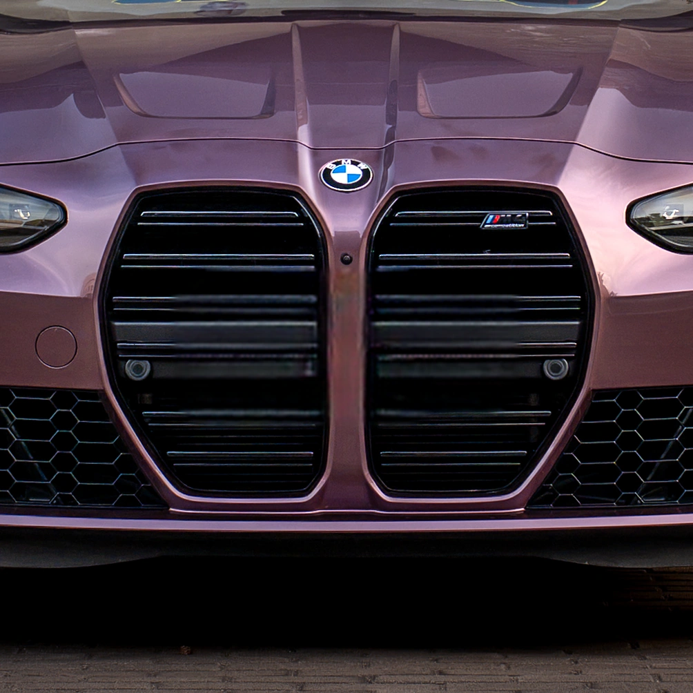

另一张实拍 / PFD32132
换个角度，
滑动看变化。
这张路虎实拍，也能直接对比消除前后。
完整构图与局部放大，都可以看。


同一张实拍照片的消除前后对比，使用相同尺寸和压缩设置，保留原有水印。网页展示副本经过压缩，原图与输出均为 4993 × 2809；不同照片的修复效果会有差异。
为汽车摄影，省一道后期工序
拖入照片或文件夹，AI 自动识别并修复车牌。
支持多车牌处理与高清修复，让填充区域与周围画面更自然地衔接。
01 / 看效果
自动消除，不止于遮住车牌。拖动对比，看看 AI 如何填充车牌区域。

原始照片与高清修复结果的同位置局部对比，未额外锐化。网页使用压缩展示图；原片与修复输出的完整尺寸均为 3842 × 5763。

展示的是旧版与高清修复结果，并非原图与结果。两张图使用相同裁剪和展示倍率，未额外锐化；本例纹理增强因强结构边缘自动跳过。不同照片的效果会有差异。
另一张实拍 / PFD32132
这张路虎实拍，也能直接对比消除前后。
完整构图与局部放大，都可以看。


同一张实拍照片的消除前后对比，使用相同尺寸和压缩设置，保留原有水印。网页展示副本经过压缩，原图与输出均为 4993 × 2809；不同照片的修复效果会有差异。
02 / 怎么用
不必逐张框选、涂抹。识别车牌、生成修复区域、填充画面，由软件自动完成。
拖入照片或文件夹，选择处理质量，开始任务。单张照片也能处理。
AI 寻找车牌，按区域分别修复。自动质量模式会按局部尺寸选择修复模型。
切换照片查看前后变化，处理结果另存，原图保留。
自动完成，也能自己调整
遇到漏检或复杂画面，可以调整区域、选择保留部分车牌，再查看修复效果。自动化省下重复操作，最终成片由你把关。
支持监视文件夹、输出命名、水印与 EXIF 配置，按需开启。
03 / 不止省事
自动处理重复步骤，高清修复照顾局部质感。
结合车辆区域与整图检测，寻找画面中的车牌。多个车牌独立修复，不把相距很远的区域挤进同一块填充。
远处小车牌、倾斜、遮挡和反光仍可能影响识别。
使用 LaMa / Big-LaMa 神经网络填充车牌区域。高清模式处理更大的局部细节，改善修复区域明显变软的问题。
高清处理需要更多时间与内存；填充不能恢复被遮挡的真实表面。
04 / 获取软件
Windows 10 / 11，64 位。本地运行，无需自行安装 Python。
包含多车牌独立检测与修复、高清局部修复与纹理增强，高清运行组件已内置，无需另找测试版。适合日常批量处理与大图复核。
按钮前往 GitHub Release 页面，由你确认后下载，网页不会自动下载软件。可在该页查看更新说明与历史版本。
安装包 SHA-256（RemoveNumberPlate-Setup-v1.2.0-win64.exe）
2642d1554a167c5004ac1c1908784c896f1b2f97d27a4532f7613e3d4c6602d1以 GitHub Release 页面随附的 SHA256SUMS.txt 为准。校验方法与未签名安装提示见下方常见问题。
个人及非商业用途可使用。商业使用需另行授权，详见软件许可。第三方组件遵循各自许可。
07 / 常见问题
软件的照片识别、修复与复核都在本机完成，无需上传照片。本网页仅展示预先准备的示例，没有上传照片或在线修复功能。
处理结果另存，原图保留。输出照片保持输入尺寸；最终文件的压缩和元信息仍取决于导出设置。
不能保证。远处小车牌、倾斜、遮挡和反光可能造成漏检或误检。可以在复核编辑器调整区域，并选择保留或消除。
更大的局部区域需要更多计算与内存。高清修复默认使用自动模式，可调整处理上限。当前版本在 CPU 环境验证，实际速度取决于照片尺寸与电脑配置。
不会。开关默认开启，但仅在邻近细节适合时补充纹理；强结构边缘、颜色不匹配或来源不足会自动跳过。开关与强度均可调整。
建议核对 SHA-256 哈希。在安装包所在文件夹打开 PowerShell，运行：
Get-FileHash .\RemoveNumberPlate-Setup-v1.2.0-win64.exe -Algorithm SHA256把输出的哈希与本页下载卡片中的哈希、或 GitHub Release 页随附的 SHA256SUMS.txt 逐位比对，一致再安装。若不一致，不要运行安装包。
安装包目前未做代码签名，SmartScreen 可能提示未知发布者。哈希校验用于确认文件与官方发布一致，不是安全性保证。确认安装包来自官方 GitHub Release 且哈希核对一致后，可在提示窗口选择「更多信息」→「仍要运行」。请不要从第三方镜像或网盘转载链接下载。
当前许可仅授予个人及非商业用途。用于商业摄影或服务前，请联系作者确认授权。阅读完整许可。
可以在 GitHub Issues 描述版本、问题和复现步骤。分享照片前，请检查隐私并确认有权公开。